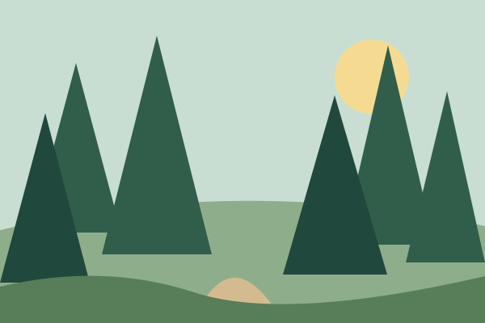
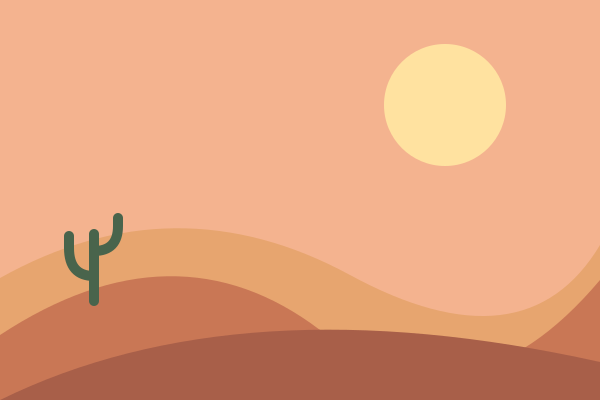
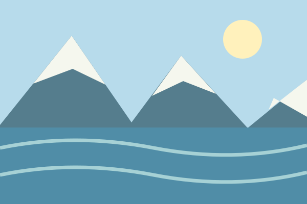
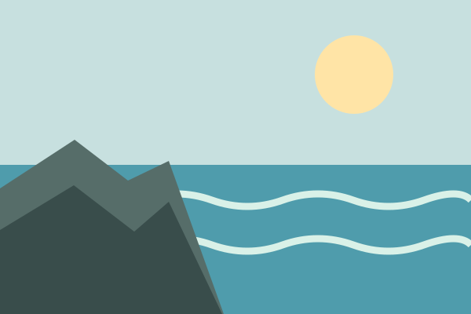
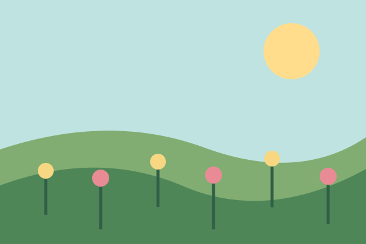

There is something worth noticing in every landscape: the first light on a hill, the quiet edge of a lake, or a path disappearing into the trees. This gallery collects nine small illustrated moments from an imagined day outdoors.
Explore the scenes from sunrise to starlight. The gallery changes shape to fit a phone, tablet, or larger screen, and it respects your device's color and motion settings.




